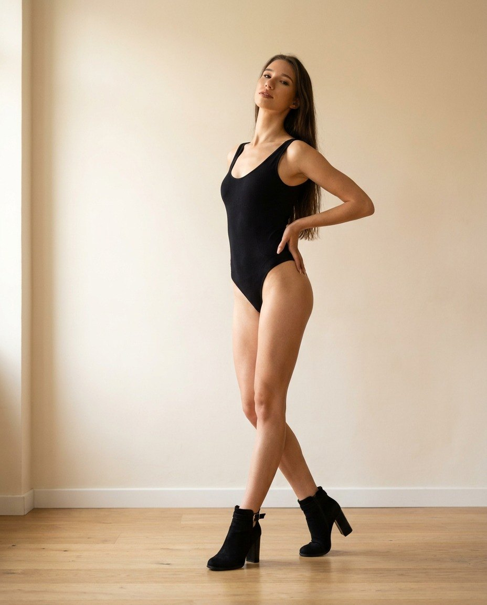
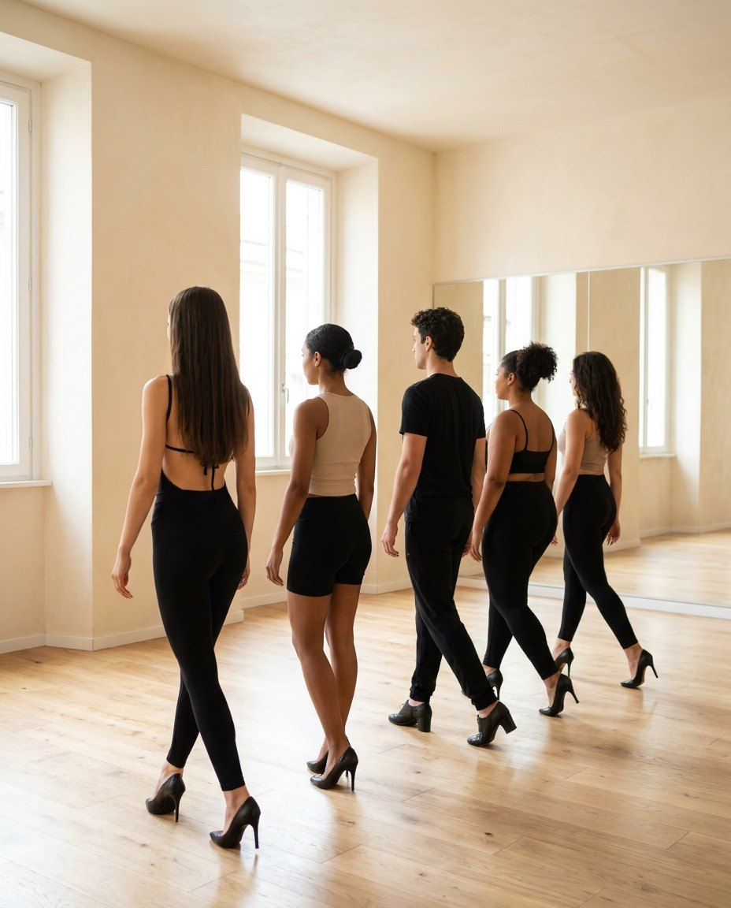
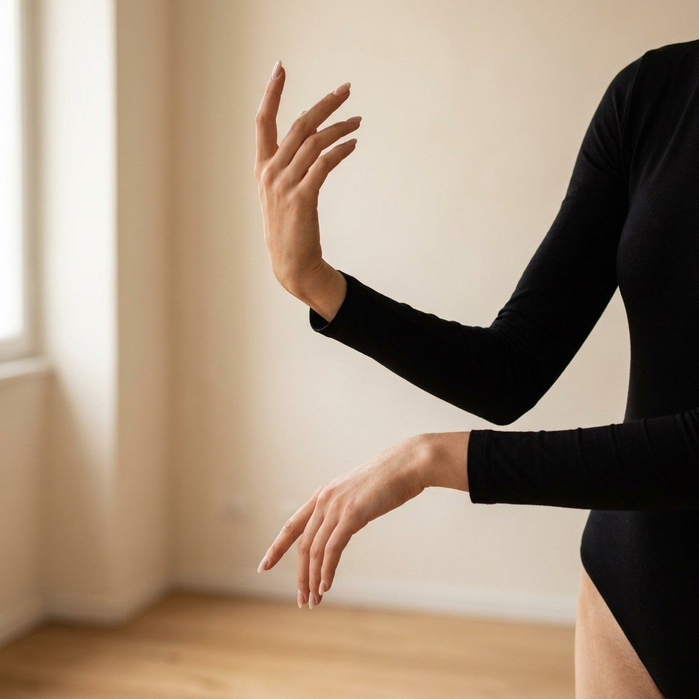
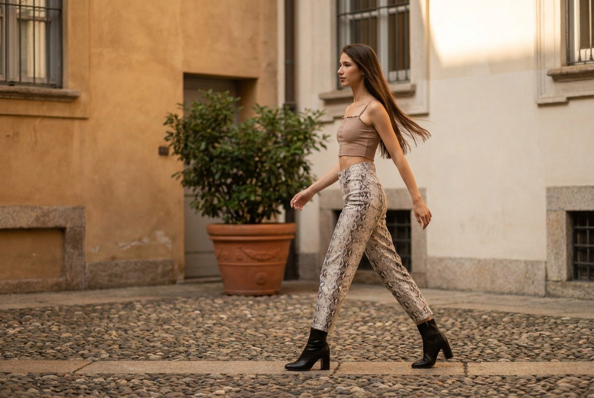

Heels dance · Milano, Brera
Sui tacchi, con carattere.
Lezioni di heels dance con Kristina, nel quartiere delle gallerie. Tecnica. Presenza. Musicalità. Non serve saper ballare. Serve voler provare.

01—Manifesto
I tacchi non si portano: si abitano.
Sui tacchi, il corpo cambia asse. Il peso va in avanti, la schiena si allunga, lo sguardo si alza. L’heels dance parte da qui: da una camminata, poi da una posa, poi da una frase di musica. Si parte dal piede, si arriva allo sguardo.
Non è una danza nata in un posto solo. Viene dal jazz e dai videoclip, dal vogue e dal waacking, dalla scena ballroom di Harlem e dai club di Los Angeles, dal burlesque e dal contemporaneo. In sala tutta questa storia diventa una cosa semplice: tenere il tempo, occupare lo spazio, decidere dove guardare. La sensualità non è il compito. È quello che resta quando la tecnica è a posto.
- Tecnica
- Postura, appoggio, allineamento. Imparare a stare sui tacchi prima di muoversi, e a muoversi prima di ballare. La camminata viene sempre prima della coreografia.
- Presenza
- Occupare lo spazio. Tenere lo sguardo. Decidere ogni gesto, anche quello che sembra non contare. In sala non conta quanto sai fare. Conta se ci sei.
- Musicalità
- Ascoltare prima di contare. Ogni frase di musica ha un peso, un accento, un respiro: il corpo li segue e li rende visibili.
02—Le lezioni
Una tecnica, quattro formule.
Ogni lezione dura 60 minuti [TODO: confermare la durata con Kristina] e segue la stessa struttura: riscaldamento senza tacchi, tecnica, floorwork, coreografia, stretching. Cambia il livello, cambia il ritmo, non cambia la cura. La lezione è in italiano; quando serve, spiego in inglese o in russo [TODO: confermare le lingue della lezione].
-
Fondamenta
Base 60 min [TODO: confermare]Per chi non ha mai messo un tacco in sala, o non ha mai ballato. Postura, appoggio del piede, camminata lenta e veloce, bevel, prime isolazioni. Alla fine, una frase coreografica breve: prima contata, poi in musica.
Principianti assoluti Tacco 5–7 cmPrenota -
Open
Tutti i livelli 60 min [TODO: confermare]Una lezione sola per chi inizia e per chi balla già. Tecnica di camminata, lavoro a terra con le ginocchiere, una combinazione nuova ogni settimana. Ogni persona la porta al proprio livello: stessi passi, intensità diversa.
Senza prerequisiti Ogni settimanaPrenota -
Coreografia
Intermedio 60 min [TODO: confermare]Per chi ha già i fondamenti e vuole il dettaglio: texture, dinamiche, hair whip, cambi di direzione, floorwork completo. Ritmo più rapido, una coreografia che cresce su più lezioni fino a essere ballata per intero.
Dopo Fondamenta Posti limitatiPrenota -
Privata
Su misura 60 min [TODO: confermare]Uno a uno, o in due. Un obiettivo preciso: correggere la camminata, preparare un video, sciogliere la paura di cadere. Orario e luogo da concordare.
1:1 o in coppia Su appuntamentoPrenota
03—La prima volta
Come funziona la prima lezione.
Un’ora [TODO: confermare la durata], cinque tempi. Arrivi, ti cambi e il resto lo facciamo insieme.
-
Arrivo e riscaldamento
Dieci minuti prima, per cambiarti e ambientarti. Si comincia senza tacchi, in calzini o a piedi nudi: mobilità di caviglie, bacino e colonna, attivazione del core.
-
Tecnica
Si mettono le scarpe. Postura, peso sull’avampiede, allineamento del ginocchio, bevel, camminata lenta e veloce. La base di tutto quello che viene dopo.
-
Floorwork
Con le ginocchiere (la prima volta bastano leggings lunghi): discese, scivolate, risalite da terra. Con calma, un passaggio per volta, senza saltare niente.
-
Coreografia
Una frase di trenta, quaranta secondi. Prima contata, poi in musica, poi ballata in piccoli gruppi. Sbagliare fa parte del programma.
-
Stretching e domande
Si torna a terra, si allunga, si fanno domande. Ti dico com’è andata e cosa portare la volta dopo.
Non serve saper ballare. Non servono nemmeno le scarpe con il tacco: la prima volta vanno bene sneaker pulite o calzini. Se hai un tacco basso e spesso con il cinturino, portalo.
04—Kristina
Chi ti aspetta in sala.
Sono nata in Russia e vivo a Milano. [TODO: formazione di Kristina: dove ha studiato danza, con chi, in quali stili]. Insegno heels dance perché è la disciplina in cui tecnica e presenza si incontrano, e perché è quella in cui ho imparato di più.
Le mie lezioni partono dalla camminata, perché chi cammina bene balla meglio, e finiscono con una coreografia, perché è lì che si vede se hai ascoltato. Correggo molto, spiego di più. [TODO: percorso di Kristina come ballerina e insegnante, in una o due frasi].
- Formazione
- [TODO]
- Stili
- [TODO]
- Lingue della lezione
- [TODO]
Si parte dal piede, si arriva allo sguardo.
05—Orari
Quando.
Esempio, non definitivo| Giorno | Ora | Lezione | Livello |
|---|---|---|---|
| Martedì | 19:00–20:00 | Fondamenta | Base |
| Martedì | 20:15–21:15 | Open | Tutti i livelli |
| Giovedì | 19:30–20:30 | Coreografia | Intermedio |
| Sabato | 11:00–12:00 | Open | Tutti i livelli |
| Su appuntamento | Da concordare | Privata | Su misura |
06—Prezzi
Quanto.
Esempio, non definitivo| Formula | Prezzo |
|---|---|
| Lezione di provaUna lezione, qualsiasi livello. Vale una volta sola. | 15 € |
| Lezione singolaQuando vuoi, senza vincoli. Prenota entro il giorno prima. | 22 € |
| Carnet 5 lezioni20 € a lezione. Validità 2 mesi. | 100 € |
| Carnet 10 lezioni18 € a lezione. Validità 4 mesi. | 180 € |
| MensileUna lezione a settimana, quattro al mese, stesso corso. | 75 € |
[TODO: Metodi di pagamento: contanti, bonifico, altro.] [TODO: Eventuale tessera associativa e certificato medico: dipende dall’inquadramento dell’attività.] Le lezioni private hanno un prezzo a parte, su richiesta.
07—Dove
Brera, Milano.
[TODO: nome e indirizzo dello spazio]
L’indirizzo esatto viene comunicato alla prenotazione.
Le lezioni si tengono in una sala del quartiere di Brera, tra le vie acciottolate, le gallerie e i cortili dell’Accademia. Una Milano più lenta, dove si cammina: il posto giusto per imparare a farlo sui tacchi.
L’indirizzo esatto ti arriva alla prenotazione, insieme all’orario e a cosa portare. Lo spazio non è una scuola con l’insegna: è una sala che, per il tempo della lezione, diventa nostra.
- Metro: Lanza M2, Cairoli M1, Montenapoleone M3. Da nord, Moscova M2 e poi corso Garibaldi. [TODO: verificare le fermate una volta noto l’indirizzo della sala]
- Tram e bus fermano in via Cusani e in via Pontaccio: verifica le linee su atm.it, i percorsi cambiano con i cantieri. [TODO: verificare le vie delle fermate con l’indirizzo definitivo]
- In auto no: Brera è dentro Area C e i parcheggi sono pochi. In bici o con BikeMi sì.
La parete
Studio, Brera.
Foto e video in arrivo — intanto, le opere.



Le immagini contrassegnate «anteprima» sono generate al computer a partire da una foto di Kristina: mostrano l’effetto finale e verranno sostituite dagli scatti veri.
——Voci
Voci dalla sala.
08—Domande
Prima di venire.
Sì. Fondamenta e Open partono dalla camminata, non dalla coreografia. Non serve saper ballare. Serve voler provare.
Per iniziare: tacco spesso o a blocco, 5–7 centimetri, con cinturino alla caviglia o allacciatura, suola sottile con un po’ di aderenza. Per ora meglio evitare tacchi a spillo e plateau molto alti, e lascia a casa le scarpe da sera: non sono fatte per muoversi. Ai tacchi alti e alle scarpe da danza vere e proprie si arriva dopo, quando la camminata è a posto. Se non hai ancora un paio adatto, vieni in sneaker o in calzini e lo compri dopo la prima lezione, quando sai cosa cercare.
Sì. Nel floorwork si sta in ginocchio, si scivola, si rotola. Consiglio ginocchiere da danza sottili, non quelle da pallavolo. Per la prima lezione bastano leggings lunghi che coprono il ginocchio.
Qualcosa di aderente: leggings, shorts, body, top. Devo vedere le linee del corpo per correggerle. Evita i pantaloni larghi (il tacco ci resta impigliato), i gioielli ingombranti e le creme o gli oli sulla pelle prima della lezione. In borsa: scarpe, ginocchiere, acqua, un asciugamano.
No. L’heels dance è per chiunque voglia salire sui tacchi: donne, uomini, persone di ogni genere, età e corpo. [TODO: confermare con Kristina se citare coreografi come Yanis Marshall o i Kazaky, che hanno portato gli uomini sui tacchi davanti al pubblico di mezzo mondo.] In sala conta la camminata, non l’anagrafe.
È normale, e si lavora proprio su questo. Si parte con un tacco basso e spesso, ci si scalda senza scarpe, si rinforzano gambe e caviglie. Nessuno ti chiede un tacco da dodici centimetri. Prima si impara a stare, poi a camminare, poi a ballare.
No. La sensualità, se arriva, è una conseguenza della tecnica, non un compito. In sala si lavora sul peso, sul core, sulle linee, sullo sguardo. Il resto viene da sé, e quanto mostrarne lo decidi tu.
In italiano. Parlo anche inglese e russo e, quando serve, spiego nella lingua di chi ho davanti [TODO: confermare le lingue della lezione]. Se preferisci, scrivimi nella tua lingua: rispondo in tutte e tre.
Scrivimi su WhatsApp: ti confermo posto, orario e indirizzo. I posti sono limitati, la prenotazione è obbligatoria. Se non puoi venire, avvisami il prima possibile [TODO: indicare le ore di preavviso richieste]. [TODO: politica di recupero della lezione, da concordare con Kristina]
Dipende da com’è organizzata l’attività [TODO: libera professione o associazione sportiva]. Ti dico tutto alla prenotazione. In ogni caso, se hai avuto infortuni alle caviglie, alle ginocchia o alle anche, o se sei in gravidanza, parlane prima con il tuo medico e poi con me.
09—Prenota
Vieni a provare.
Un messaggio, e ti rispondo con posto, orario e indirizzo. Dimmi come ti chiami e se hai già ballato: il resto lo vediamo in sala.
Rispondo di solito entro un giorno [TODO: confermare i tempi di risposta]. Durante le lezioni il telefono resta in borsa.